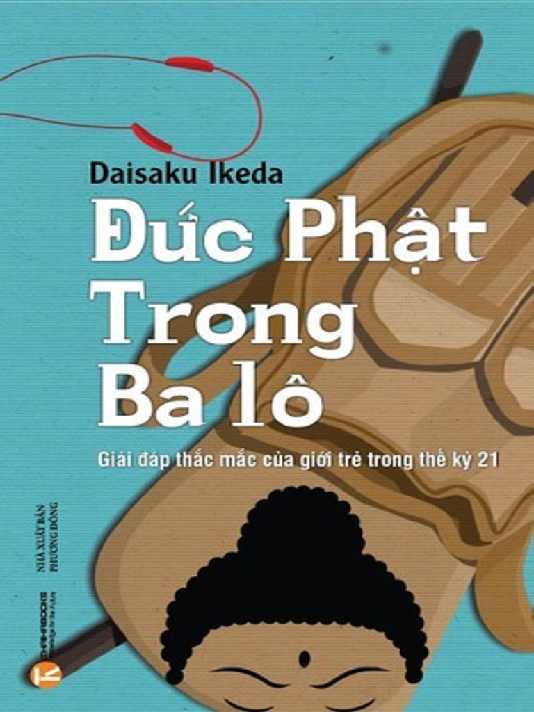

Đạo Phật Trong Ba lô

0.1 LỜI TỰA
Mười chín tuổi, hết sức thất vọng vì nhận thấy mình không có khả năng chèo lái cuộc sống và hoang mang trước chiều hướng mà thế giới hiện đại dường như đang lao theo, tôi bắt đầu thực hành Đạo Phật. Đó dường như là triết lý duy nhất thừa nhận sự thần bí và kỳ diệu của vũ trụ mà không hề mâu thuẫn với quan điểm có tính khoa học, lý trí của tôi. Đạo Phật nhuộm cả vũ trụ bao la và thế giới loài người trong giá trị đích thực và tự do cao cả.
Trong mười năm kể từ ngày đó, lòng yêu kính Đạo Phật của tôi ngày một sâu sắc. Có lẽ quan trọng hơn, việc thực hành Đạo Phật của cá nhân tôi đã khuấy động cuộc sống của tôi theo những cách mà trước đây tôi chẳng bao giờ có thể nghĩ tới. Theo nhiều cách, chính nhờ ơn Daisaku Ikeda mà tôi có được những tình cảm yêu kính này. Là người đứng đầu tổ chức Soka Gakkai International, tổ chức Phật Giáo của các phật tử tại gia mà tôi là thành viên, ông đã làm việc không mệt mỏi để khích lệ, khai sáng hàng triệu người trên thế giới.
Tôi cùng những người bạn cư sĩ của mình niệm Nam mô Diệu pháp Liên hoa mỗi sáng và mỗi tối như một phần việc thực hành hàng ngày. Trong khi tôi chân thành khuyến khích tất cả mọi người thử cách thực hành này vì sự phát triển và lợi lạc của họ, giáo lý Đạo Phật, đặc biệt là qua sự dẫn giải của Daisaku Ikeda, bao hàm cả một thế giới những ý tưởng có thể đem lại phúc lạc to lớn cho các Phật tử cũng như những người không theo Đạo Phật nói chung. Nói cách khác, không phải vì bạn không thực hành Đạo Phật mà bạn sẽ không học được nhiều điều từ cuốn sách này. Đó là bởi, ở mức độ thực tế, Đạo Phật rất hợp lý, không hề khác biệt so với những tư duy thông thường.
Tất nhiên, phần đông chúng ta đều biết rằng chúng ta không thường xuyên dùng đến tư duy thông thường của mình, rằng chúng ta không phải bao giờ cũng thấy mọi chuyện là hợp lý. Nhà khoa học tiên tiến nghiên cứu về máy tính, Marvin Minsky, có một cách giải thích rất hay về điều này. Ông nói: “Tư duy thông thường không phải là một thứ đơn giản. Thay vào đó, nó là một tập hợp khổng lồ các ý tưởng thực tế đã qua tôi luyện – của vô số những điều học được qua cuộc sống: luật lệ và ngoại lệ, sắp đặt và xu hướng, cân bằng và trở ngại. Điều đó tình cờ cũng là một cách miêu tả khá đúng về Đạo Phật.”
Trong những trang tiếp theo, bạn sẽ được đọc những câu hỏi và băn khoăn của các bạn trẻ gửi đến Daisku Ikeda. Dù có những câu hỏi có vẻ đơn giản, chúng ta sẽ luôn thấy sự thông tuệ trong cách trả lời thẳng thắn của ông. Lời khuyên của ông tràn đầy sự cảm thông, khích lệ. Khi làm theo lời khuyên ấy, chúng ta sẽ dần nhận ra khả năng kiểm soát định mệnh của riêng mình. Về phần mình, tôi thấy ông đưa ra những lời khuyên thật sâu sắc về tình yêu và các mối quan hệ, điều này đã cứu tôi thoát khỏi rất nhiều điều mà 10 năm trước tôi coi đó là sự đau khổ.
Một điểm thực sự quan trọng mà Ikeda liên tục nhấn mạnh là việc định hướng những thay đổi và tạo ra thế giới mới này hoàn toàn phụ thuộc vào thế hệ trẻ chúng ta. Tất cả chúng ta không chỉ vốn đã có khả năng tác động lên những thay đổi đó mà chúng ta còn có trách nhiệm phải làm điều đó một cách hiểu biết, đầy yêu thương.
Nhờ có Daisaku Ikeda, tôi đã biết rằng cuộc sống được dẫn dắt theo cách nhìn của Phật Giáo có thể là một cuộc sống giàu có, thú vị và luôn luôn hạnh phúc. Và tôi nghĩ rằng đó là tất cả, sống hạnh phúc, sáng tạo và tràn đầy lòng biết ơn cuộc sống với mọi hình thức biểu hiện tuyệt vời của nó.
Ca sĩ , nhạc sĩ người Mỹ
0.2 MỞ ĐẦU
Ước mơ của bạn là gì? Hy vọng của bạn là gì? Chẳng gì mạnh mẽ hơn một cuộc sống tràn đầy hy vọng.
Mỗi ngày tôi đều nhận được thư của các bạn trẻ trên khắp thế giới, tôi trò chuyện với họ bất cứ khi nào có cơ hội. Tôi thấy rất nhiều bạn trẻ tràn đầy hy vọng và nhiệt huyết, nhưng một số khác dường như nặng trĩu những vấn đề rắc rối. Cùng với quá trình trưởng thành và thay đổi, tuổi trẻ cũng có thể là giai đoạn của những lo âu, mệt mỏi. Những người trẻ tuổi nhiều khi cảm thấy lúng túng, như thể họ bị bỏ lại một mình giữa một nơi hoang dã hay giữa một chiến trường. Họ có thể cảm thấy như không còn ai để mà tin tưởng, không ai quan tâm đến họ, rằng họ không có mục tiêu nào trong cuộc sống.
Nhưng khoan! Coi nhẹ bản thân như thế có đáng không? Bạn có nên đánh giá thấp khả năng của mình như vậy không? Không ai sống mà không có một nhiệm vụ, mục đích nào đó trên cõi đời này. Và chính sự nhận biết về nhiệm vụ và mục tiêu đó là điều mang lại ý nghĩa rõ ràng và sự mãn nguyện trong cuộc sống con người.
Hồi mười chín tuổi, tôi gặp Josei Toda, người đã trở thành người thầy của đời tôi. Thậm chí đến tận bây giờ tôi vẫn không bao giờ quên được những lời ân cần thầy nói với tôi hơn 40 năm về trước, khi tôi đang trải qua một giai đoạn cực kỳ khó khăn. “Daisaku”, thầy nói: “những người trẻ tuổi phải gặp những khó khăn của mình. Khó khăn chính là điều tạo nên con người tốt nhất của con.”
Mỗi sáng, kể cả Chủ nhật, thầy Toda, giống như gia sư riêng của tôi vậy, chỉ bảo cho tôi về mọi điều. Và tôi cũng đã cố gắng theo cách đó để được trò chuyện với các bạn trẻ bất cứ khi nào có cơ hội. Cuốn sách này được đúc kết từ những cuộc đối thoại như thế. Tất nhiên hầu hết những cuộc trò chuyện này là với các bạn trẻ Nhật Bản. Nhưng những chủ đề mà chúng tôi thảo luận – gia đình, bạn bè, ước mơ, mục tiêu trong cuộc đời – tôi chắc chắn cũng là mối quan tâm của các bạn trẻ mọi nơi trên thế giới.
Tôi và các bạn trẻ tôi trò chuyện cùng đa số đều thực hành Phật Giáo Nichiren (Nhật Liên Tông). Nichiren, một vị thầy và nhà cải cách Phật Giáo của Nhật thế kỷ 13, dạy rằng mỗi đời người đều có một tiềm năng vô hạn, và Ngài vạch ra con đường tiếp cận dễ dàng mà qua đó mỗi người có thể nuôi dưỡng tiềm năng ấy và tìm được hạnh phúc thật sự trong đời, con đường mà Ngài học được qua bộ kinh Pháp Hoa(1).
Thiên tài và những người có năng khiếu tuyệt vời chỉ là thiểu số, số đông khổng lồ trong xã hội là những con người đơn giản, bình thường. Tôi là một người bình thường, không có một nền tảng đặc biệt nào cả. Cuốn sách này được viết với hy vọng rằng các bạn trẻ có thể thu được lợi ích từ những lời khuyên của một người như tôi, người có đôi chút kinh nghiệm hơn các bạn. Tôi hy vọng bạn đọc sẽ tiếp nhận những điều tôi viết ra đây như lời khuyên từ một người đã đi xa hơn chút xíu trên con đường đời, chứ không phải như những bài thuyết giảng của những người có hiểu biết uyên thâm.
Một trong những mục tiêu tôi đặt ra trong đời là giúp các bạn trẻ có được hy vọng và sự tự tin vào tương lai của mình. Bản thân tôi có một niềm tin vô hạn dành cho giới trẻ, và vì thế tôi nói với họ: Các bạn là niềm hy vọng của nhân loại! Mỗi bạn đều có một tương lai tươi sáng phía trước. Mỗi bạn đều có một tiềm năng quý giá đang chờ được phát triển. Thành công của các bạn, vinh quang của các bạn sẽ là vinh quang cho tất cả chúng ta. Vinh quang của các bạn sẽ dẫn dắt con đường trong thế kỷ này, thế kỷ của hòa bình và nhân đạo, thế kỷ quan trọng nhất cho tất cả nhân loại. Xin được gửi đến các bạn lời cầu chúc sức khỏe, sự tiến bộ không ngừng và thành công trong mọi nỗ lực của mình.